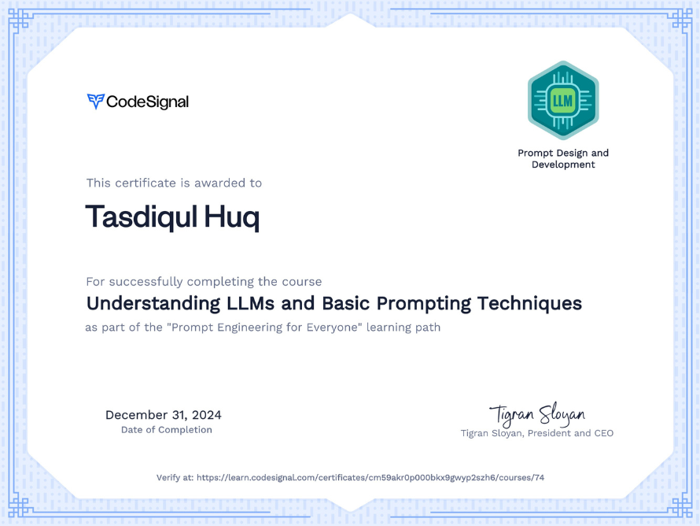
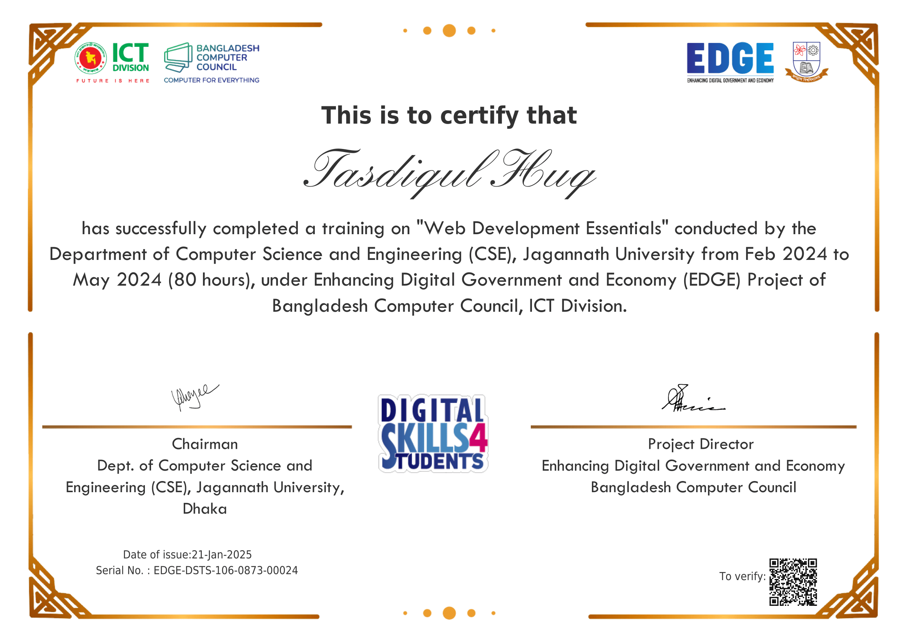
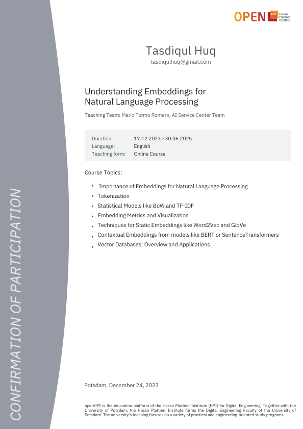
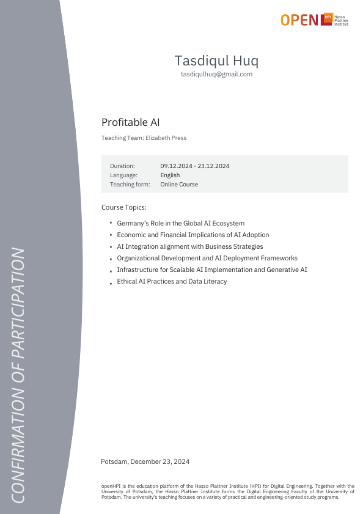

Kasaba Fashions, Logistics & Constructions (KFLC)
Nov 2026 – PresentMilitary Procurement Executive
- Supporting global trade, defense procurement logistics, and technical tendering operations.
Python Developer • Web Specialist • Automation Engineer
I’m Tasdiqul Huq, a Computer Science graduate from Notre Dame University Bangladesh, focused on Python, automation, web development, and real-world problem solving.
About Me
I am a Computer Science and Engineering graduate with a strong interest in backend engineering, automation, and data-driven software. My work blends practical software engineering with a deep focus on reliability, optimization, and user experience.
At T.B. Solutions – SEO Domains, I develop and maintain Python scripts, automate workflows, and improve system efficiency through thoughtful process design. Previously, as a Web Specialist at Alliance Overseas, I improved uptime, built and hosted responsive web experiences, and helped increase online engagement and sales.
I have also contributed through internships in software engineering, ERP workflows, and enterprise systems, as well as a current role supporting global trade and procurement logistics at Kasaba Fashions, Logistics & Constructions (KFLC).
Experience
Military Procurement Executive
IT & IFS Dept. Intern
Software Engineering & Technology Dept. Intern
Python Developer
Web Specialist
Education
Bachelor of Science
B.Sc. in Computer Science & Engineering
Thesis: Edge Enabled AI Diagnostic Framework for Resource Constrained Rural Clinics
Advisor: Prof. A. H. M. Saiful Islam & Dr. Fernaz Narin Nur
HSC
SSC
Projects
Built a prediction system using Decision Tree, Random Forest, Logistic Regression, and MLP, with interactive visualizations and custom prediction support.
View projectEngineered a concurrent Python scraper that fetches archived snapshots, detects redirects, extracts metadata, and summarizes content using LSA-driven analysis.
View projectDeveloped a reporting tool for historical nameserver analysis, domain-health checks, and smart identification of risky or valuable domains.
View projectBuilt a high-performance domain auction monitor with concurrent scraping, anti-detection logic, rotating proxies, and automated report generation.
View projectCreated a distributed web-scraping architecture to collect competitive intelligence data using concurrency, caching, rate limiting, and CSV reporting.
View projectResearch focusing on South Asian English writers, with attention to dataset preparation, feature engineering, and bias mitigation in algorithmic systems.
PendingSkills
Certifications
A growing collection across software engineering, AI, machine learning, Python, data, and web technologies.



 with Vertex AI Model Evaluation.png)









Contact
I’m open to software engineering, web development, automation, data analysis, and impactful technology collaborations.